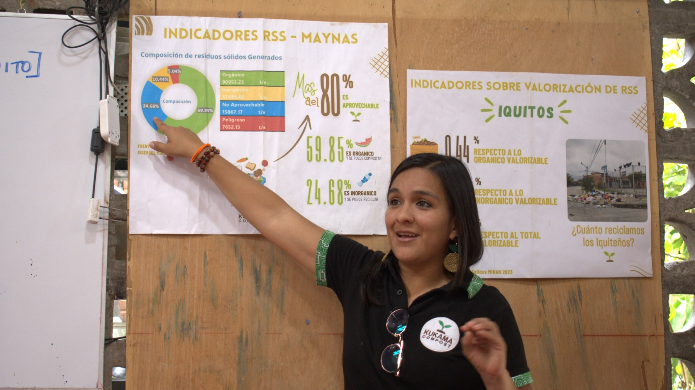

Exploramos
Reconocemos los desafíos ambientales presentes en cada espacio y territorio.
Aprendamos juntos
Creamos experiencias prácticas para comprender, cuidar y actuar por nuestro territorio.
Solicitar un taller →
Aprender haciendo
Diseñamos talleres participativos para colegios, empresas, barrios y comunidades. Partimos de preguntas cotidianas para aprender sobre residuos, compostaje, consumo responsable y el vínculo que tenemos con la Amazonía.
Reconocemos los desafíos ambientales presentes en cada espacio y territorio.
Aprendemos con dinámicas, materiales reales y soluciones aplicables.
Convertimos lo aprendido en compromisos concretos y sostenibles.
Talleres a medida
Adaptamos cada experiencia a la edad, grupo y realidad de quienes participan.